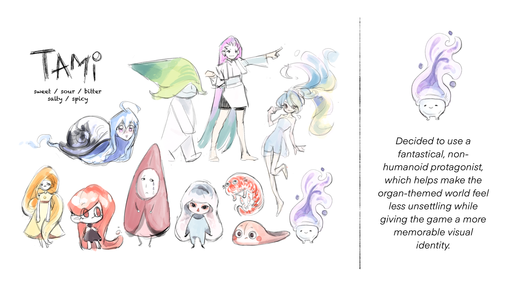
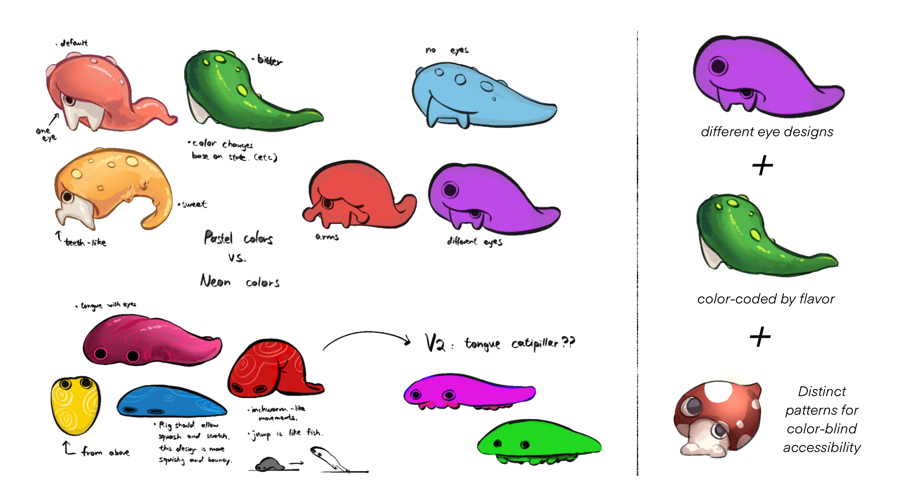
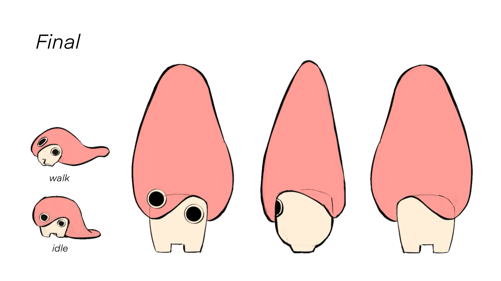
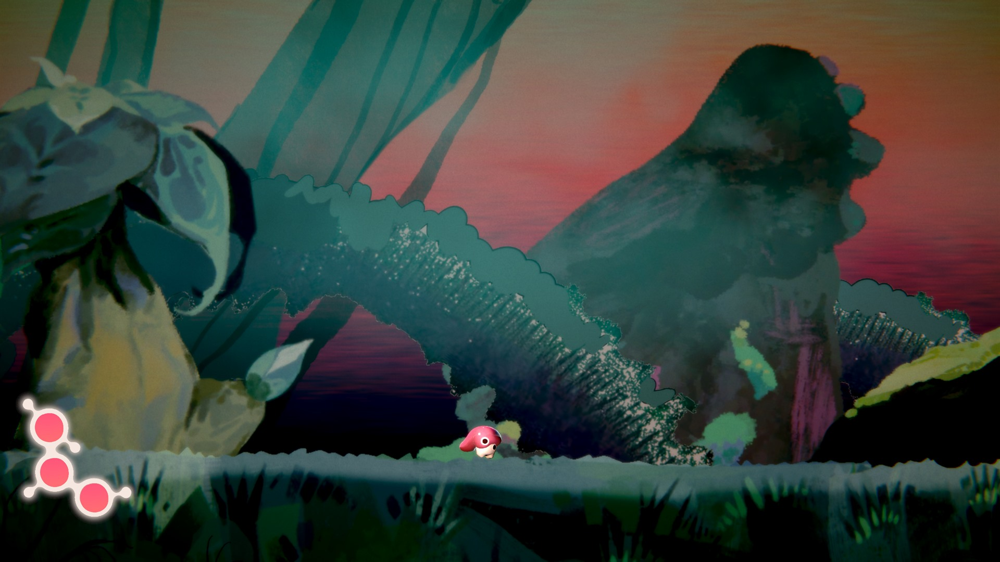
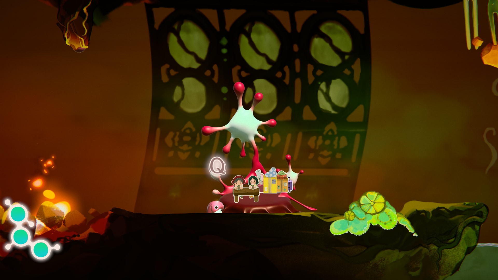
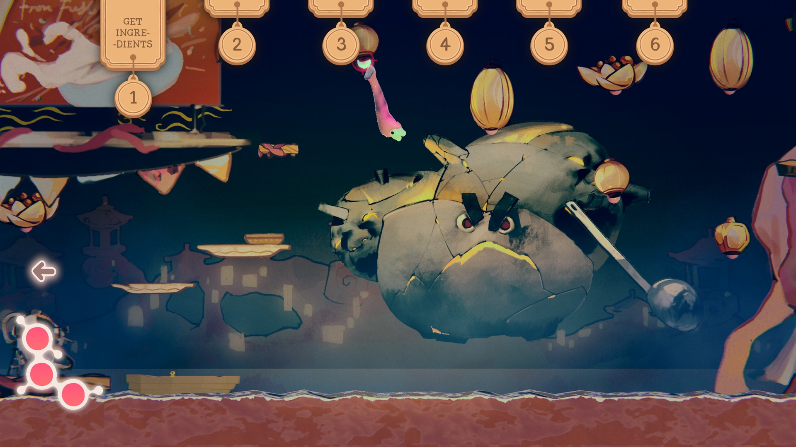

My Contribution
Art direction across a multidisciplinary team
A concise view of my responsibilities. Individual artwork and collaborative work are credited at the point where they appear.
Art Direction
Established the art bible and reviewed visual work throughout production.
Team Direction
Planned weekly art priorities around team strengths and production milestones.
Cross-discipline Coordination
Worked with design and engineering on visual requests and feature needs.
Marketing
Created promotional posters and exhibition materials.
Character Design
01 — Sketch
Early exploration of Tami's silhouette, expressions, and personality.
02 — First Pass
Refining proportions, costume, and the first full color palette.
03 — Final
The final design — resolved shapes and colors, ready for animation and in-game implementation.

INITIAL DESIGN — ROWENA CHEN
FIRST PASS — MINGYE FANREVISION DIRECTION — ROWENA CHEN

FINAL EXECUTION — MINGYE FANAnimation System
From animation logic to motion studies
The flowchart introduces the system as a whole. The 2D and 3D studies are grouped below so their different roles can be read without breaking the chapter apart.
2D Motion Studies
4 selected clips · controls available
3D Motion Studies
5 selected clips · controls available
Three Environment Workflows
Scene first, process second
Each environment begins with one selected in-game scene before revealing the workflow behind it.
Exterior
Selected in-game scene.
Workflow below.

Interior
Selected in-game scene.
Workflow below.

Boss
Selected in-game scene.
Workflow below.
